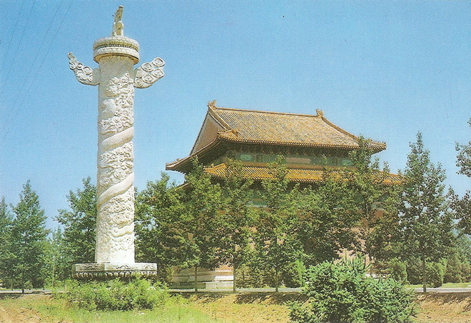
.
The majority of the Ming tombs are located in a cluster near Beijing and collectively known as the 'Thirteen Tombs of the Ming Dynasty'. The site, on the southern slope of Tianshou Mountain was chosen based on the principles of feng shui by the third Ming emperor, the Yongle Emperor.
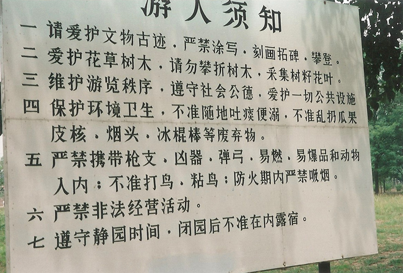
Stepping off our tour bus we were immediately assailed by shreiking, wailing and calling only to realise it was from vendors of T-shirts, sun-hats, sunglasses, Ming outfits and the obligatory busts of Chairman Mao. Shopping would never be the same again ...
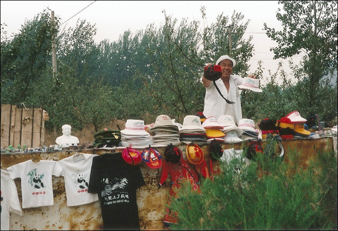
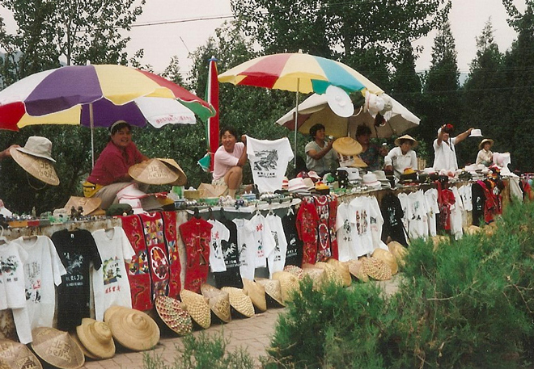
After the construction of the Imperial Palace (Forbidden City) in 1420, the Yongle Emperor selected his burial site and created his own mausoleum. The subsequent emperors placed their tombs in the same valley. The last Ming emperor buried at the location was the Chongzhen Emperor, who committed suicide by hanging (on 25 April 1644).
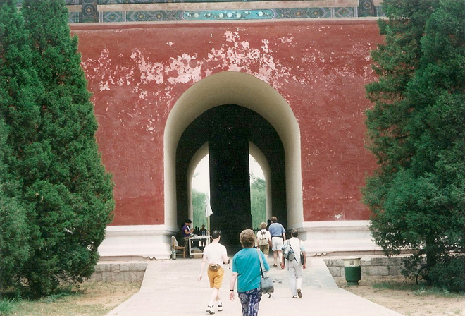
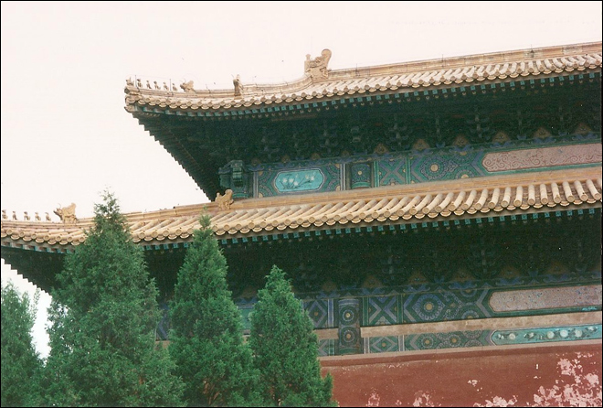
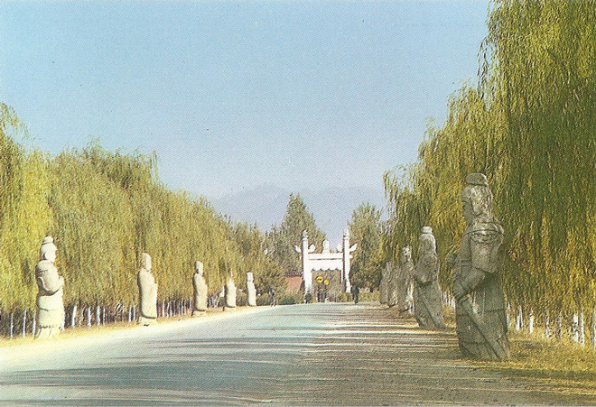
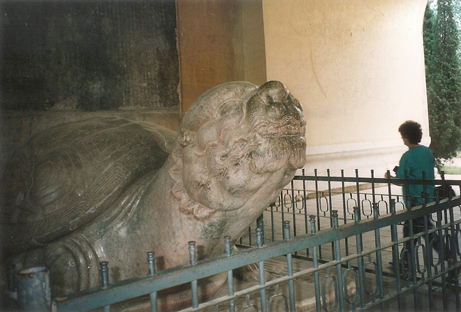
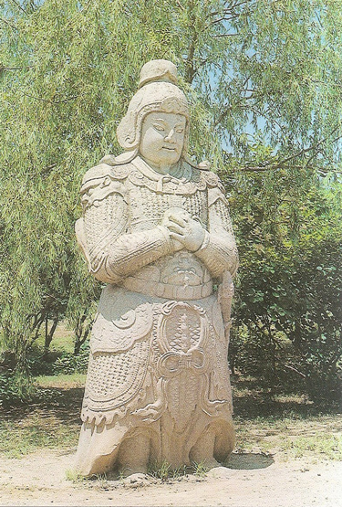
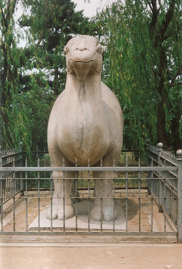
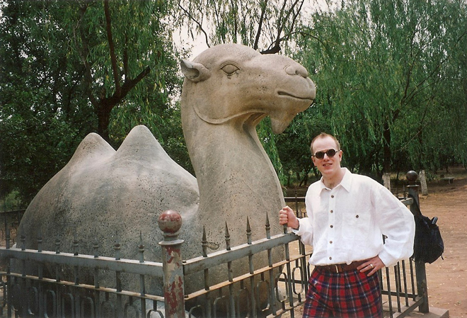
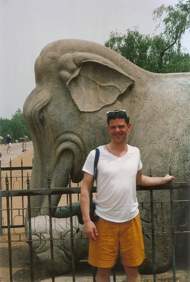
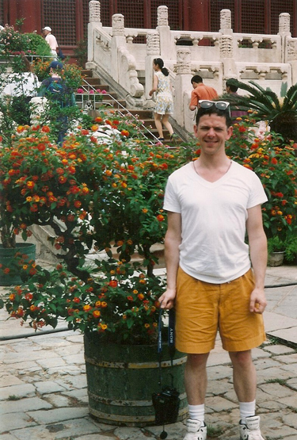
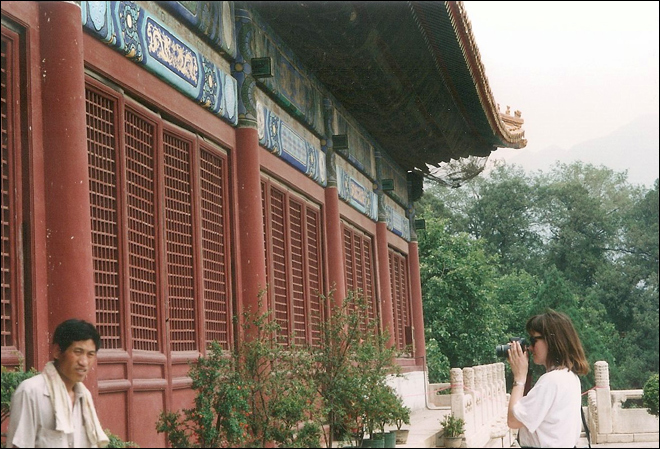
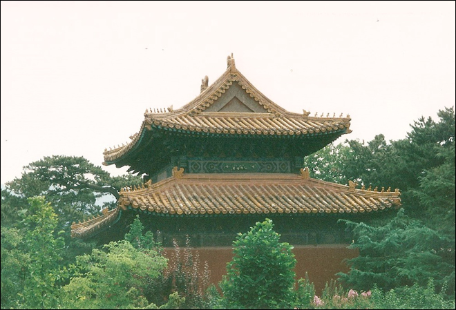
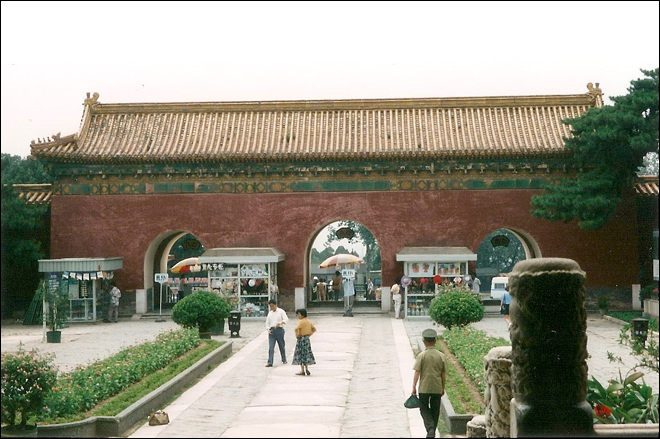
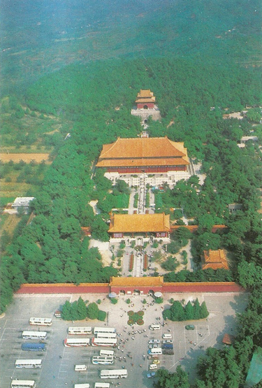
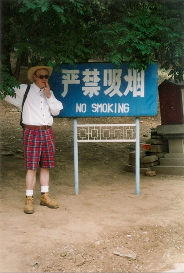
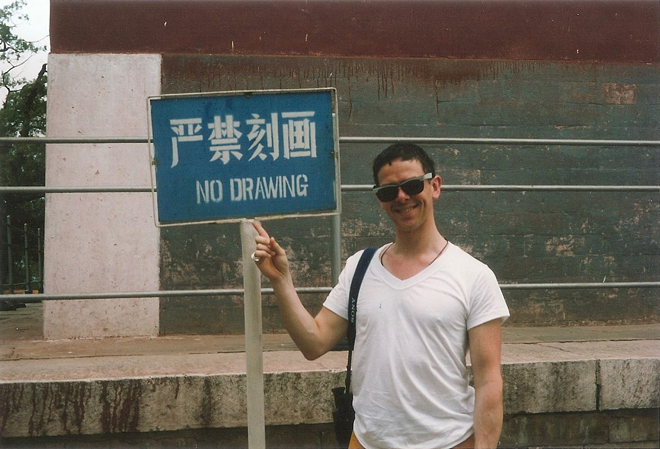
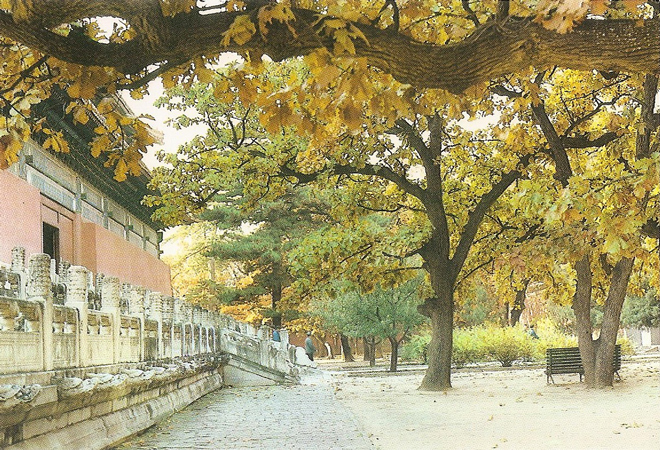
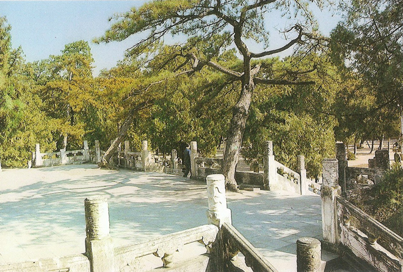
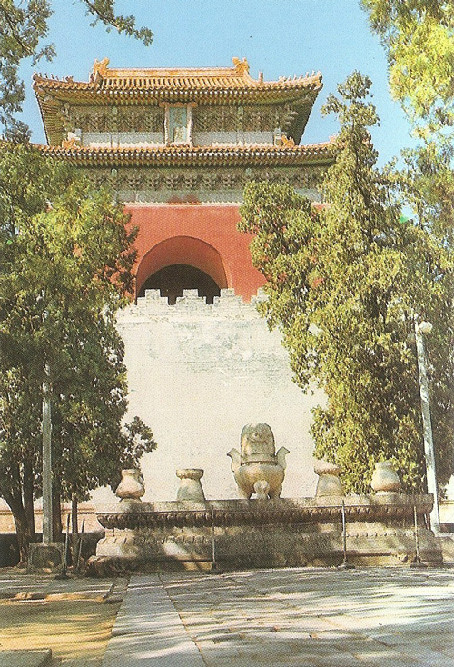
A delightful bus ferried older visitors around the site, while the two guides drank tea from their flasks. The photos were taken before the days of 'panoramic' ability so I've had to roughly stitch three photos together .
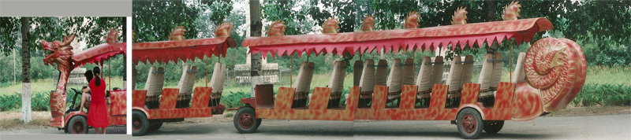